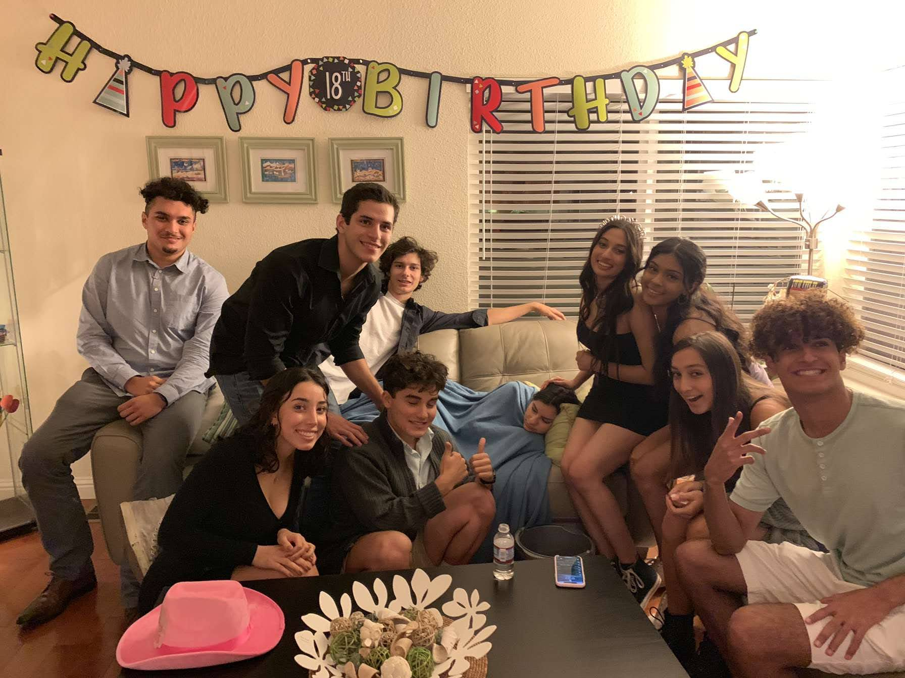
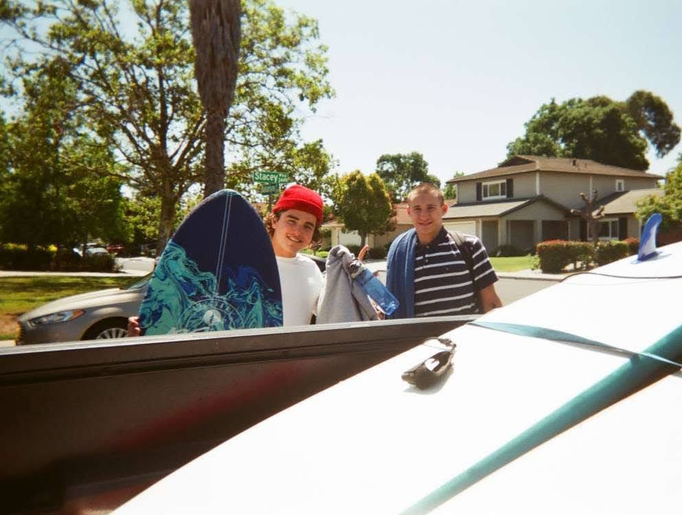

Hello! I am an undergraduate at UCLA, studying computer science and
mathematics, and currently, I am working with Dr. Mark Burgin on the axiomatic theory of algorithms.
When I am not pondering abstract problems in and out of the standard curriculum, I enjoy
collaborating on various software projects, read philosophy, exercise, design clothes for myself and
for others, surf, snowboard, and, more often than not, let my curiosity takeover and spend way too
much time on wikipedia. Next year, I intend to apply for graduate school and pursue a PhD in
theoretical computer science.
Under Construction
"It is by logic that we prove, but by intuition that we discover." (J. Henri Poincaré)
At large, even though I am primarily computer science and mathematics, I would claim to be fascinated with
philosophy, and physics. At this early point of my academic journey, I don’t feel quite comfortable stating
specific (aimed) areas of work or expertise, particularly seeing that I can’t help to enjoy every single
course I take and frantically curious about any technical term I hear, but, for those interested in some
further categorization, I am mostly interested in “purish” areas lying in the intersection of maths and cs
such as complexity, cryptography, and algorithms.
To compensate for my high-uncertainty range about my desired field of expertise, for those out there still
hoping to understand “who is Matan Shtepel?” I did my best to articulate what drives my particular scholarly
curiosities, and then, my academic ambitions. The following lists may not be entirely exhaustive, but hey,
they are something. If the following seems a bit romantic, well, that means you really are learning about me :)
For starters, I have always, still do, and likely always will, have a deep appreciation for order, rules,
and structure, which I now understand are the only ways to exceed our inborn biases and human notions, but
more personally, I think games without rules are simply no fun -- at least not in an intellectual-challenge
sense, which bring me great joy. That being said, there are few things that I find as fulfilling as tackling
hard tasks, distinctly those which demand a combination of creativity and deductive reasoning. As painful as
the process leading up to it often is, I find the moment in which my brain switches from the “I have no
knowledge at all of this strange coalescence of phrases and symbols” state to “I understand!” virtually
addicting. Beyond such practical concerns, I am driven by the beauty of subjects I am so fortunate to study,
and this is tougher to describe as its not “rational” or explicit, perhaps its about admiring successful
information compression or the awe of the achievement of my fellow ape-descendants, but when I watched a
Bertnard Russel interview, studied the fundamentals of topology, or get the first glimpse of Turing
Machines, my heart was just filled with incredible feeling -- truly indescribable.
Simply (and naively) stated, I am pursuing a career in academia because I believe contributing to the
ever-growing pool of human knowledge and training others to do the same is the most noble way I can spend my
life/finite time on this earth, and beyond, as far as my limited predictive powers enable me to see, I think
I will find deep happiness within that career. Being able to deeply delve into a topic without a brow raised
and a “you are thinking too much” stated, is a privilege I am willing to work hard for. I must say, from
time to time I do struggle with the infatuation of visions of fame and glory, but I do my best to stick to
my purest motives and let the many reasons and experiences above determine my life-long ambitions.
While it’s both difficult to explicitly articulate and awkward to self-state, I would say my burning
curiosity, not quite fixated on application, chasing a paramount understanding of the space of ideas, and
thirsty for an earnest challenge.
Conatct Me!
If you consider contacting me, please, do not hesitate! I am happy to recieve any and all questions,
offers, suggestions and vegan steak recepies. Find me at:
{first}.{last}@gmail.com
gnarlymshtep at g.ucla.edu
Selected Photos

Celebrating Kylee's Birthday
Wearing my favorite paradox (self-made)

After a relaxing surf
Personal Favorites
To wrap it up, here are some personal favorites from the many facets of life:
Proof Technique: While contradiction (and the entire idea of the law of excluded
middle), diagnolization proofs are extremely beutifull in it's immediate simplicity
Song: This one is perhaps more subjective, but San Tropez by Pink
Floyd has an unparallaled affect on my mood -- Headphones on, eyes shut, and any prior
distress immediately vanishes -- I promise! give it a listen.
Programming Languge: By any traditional paramters, it is clearly, not the
best
programming language, but with an ecosystem richer than the Jeff Bazeos and VSCode which
makes it incredibely fun to write, JavaScript must be my favorite language to make web,
desktop,
and mobile apps. Python is still better for quick-scripts
YouTube Video:There are many, but this this Robert Miles video on
the
orthogonality thesis has changed the way I look at the world and first peaked my interest in
Hume's writing.
YouTube Channel:3b1b-- there is
absolutely no doubt.
Podcast:The Lex Fridman Podcast is
second
to none. If you are looking for an episode to start on and you are philosophy/math inclined,
I may reccomend #158 with Zev Weinstein
or #64 with Grant Sanderson.